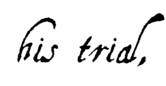
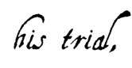

|
March 18, 1314: the Execution of Jacques de Molay
 O
O
n March 18, 1314, the four Knights were brought before the gates of Notre-Dame to hear their sentence: that is, "the wall," or life in prison. De Molay and Charnay had held on up until then by the promise of eventual release; they had already spent seven years in prison and had no intention of going back in despair. In his history of the Knights Hospitalers of St. John of Jerusalem, abbé Vertot confirms that when his judges and all of Paris expected de Molay to publicly reaffirm his supposed confessions, "people were shocked when the prisoner shook his chains, strode to the edge of the scaffold with an assured countenance and then, raising his voice so he could be heard, shouted: 'It is just that on such a terrible day, in the final moments of my life, I should discover the full iniquity of the lie, and that I should make the truth triumph.
'I thereby declare, before heaven and earth and to my eternal shame, that I have committed the greatest of all crimes, by acknowledging those so darkly attributed to an Order which the truth obliges me today to recognize as innocent. I even made the confession required only to escape the pain of torture and to sway my torturers. I know the agonies suffered by all those who had the courage to recant such confessions. But the horrid spectacle before me cannot make me reaffirm an earlier lie with a new one, on this despicable condition. I renounce with all my heart my life which has become only hateful to me. And what good would it do me to prolong days of misery that I owe only to slander?"
Famous by a birth that related him to the king, Geoffroy de Charnay, Master of Normandy and brother to the dauphin of Auvergne, confirmed this declaration and chose to repent alongside his master. The two other Knights present persisted in their confessions. As the crowd murmured, the cardinals, themselves moved and unwilling to decide the fate of the relapsed, handed the two last-minute confessors of truth back to the Provost of Paris. The king was alerted, the council assembled and the two were immediately sentenced to death – without altering the sentence of the Pope's commissioners, without a verdict from any ecclesiastical tribunal. That same evening, a scaffold was erected on the Ile de la Cité across from the quai des Augustins. The two Templar Knights, de Molay and Charnay, were lifted up and slowly burned at the stake.
No Italian chronicler was fooled by the shameful trial of the Templars: not Villani, nor Dino Compagni, nor Boccaccio (whose father was in Paris at the time of the trial), nor the author of the Storie Pistolesi, nor Dante (who was present at de Molay's execution). All could see the irony of a situation where the most faithful servants of the court of Rome, the most steadfast defenders of the faith, were killed as heretics. French writers at the time were naturally more careful and didn't dare contradict the Pope and the king. However, as one poet clearly put it, had the Templars been truly guilty of such crimes, they would have earned the torture and other "niceties" they endured. But since God accepted them with open arms, they were perhaps not as guilty as once thought. On earth, he continued, the Pope and the king must be obeyed. But God cannot be fooled; He, alone, knows the truth. In Old French, he wrote:
Bien gaaingnié l'avoient celz,
Se voirs estoit qu'en disoit d'elz…
Plusieurs, ou monde condampnez
Sont lassus au ciel couronnez,
Et les aime Diex et tient chiers.
Mais ça aval, en ceste Eglise,
Nous convient trestouz la devise
Tenir du pape et l'ordinance…
L'en puet bien decevoir l'Eglise ;
Mes l'en ne puet en nule guise
Diex decevoir ; je n'en dis plus. Qui voudra die le surplus.…/…
   |